安心云·民匠有约 产品设计文档 v2.0
本版根据最新产品定义校正：三款 SaaS 平台为民匠有约 / 代理商 / 安心云；用户角色只分主账号（Owner）与子账号（Member，可自定义权限范围）两级；登录方式仅微信扫码、密码+验证码两条；企业认证走电子签约"爱签"的人脸认证或法人四要素核验，成功后即认证完成；三者关系以"逻辑关联关系图"表达，不展开表字段设计。
补充：面包屑跳转、主/子账号关系、控制台按角色控制三款 SaaS 的授权开关、全部流程对应流程图，以及控制台"截图+标记+说明"的操作图解。
0. 补充：面包屑跳转规范 & 主账号 / 子账号关系
0.1 面包屑跳转（全控制台统一）
所有 account-* 控制台页的面包屑最多三级，每一级都可点击。点击行为不得因页而异，统一如下。
flowchart LR BC["面包屑:首页/控制台/当前页"] BC --> H["首页 -> index.html 官网首页"] BC --> C["控制台 -> account-center.html 产品中心"] BC --> P["当前页 -> 无跳转或刷新当前页"] P --> P1["企业信息:不点击或刷新"] P --> P2["用户管理/成员管理:末级不点击"] style H fill:#FF7A16,color:#fff style C fill:#2A6DF4,color:#fff style P fill:#0C9A74,color:#fff
index.html；点击"控制台"，不论当前在资金/合同/用户哪个模块，都回到 account-center.html 产品中心卡页。
0.2 主账号 / 子账号 关系模型（唯一两级）
账号体系"扁平化两级"，不做多层 Owner-Admin-Manager-Member。复杂能力通过"子账号的授权范围（模块开关）"来表达，不通过角色分层。
flowchart TB E["企业:统一社会信用代码唯一"] E --> OWN["主账号 Owner:1个/企业"] E --> S1["子账号 1"] E --> S2["子账号 2"] E --> S3["子账号 3 ... N"] OWN --> POW["超级权限集
-企业信息修改/转让
-主账号安全
-添加移除停用子账号
-子账号授权开关
-合同签署/资金划转
-三款SaaS授权开关"] S1 --> R1["授权范围例1
-民匠有约 SaaS:全模块
-代理商 SaaS:查看
-安心云 SaaS:未授权
-资金账户:仅充值
-用户管理:查看"] S2 --> R2["授权范围例2
-安心云 SaaS:财税+发票
其他效果
-产品中心卡片变灰
-菜单不在DOM出现"] S3 --> R3["授权范围:自定义任意组合"] style OWN fill:#0C9A74,color:#fff style E fill:#1F3FA8,color:#fff style POW fill:#FFF4D9,color:#5C3A00 style R1 fill:#EAF0FC,color:#1F3FA8 style R2 fill:#E7F8F0,color:#085A3F style R3 fill:#FFF1E5,color:#7A3800
1. 用户：注册流程 & 主/子账号设计
1.1 登录入口只有两种 Tab
登录页 login.html 顶部三个导航不是三种登录方式："注册账号" 是独立流程（点击切换到注册面板）。登录方式只有两栏。
| 登录方式 | 输入要素 | 未注册用户命中时 | 已注册用户命中时 |
|---|---|---|---|
| 方式 1 · 微信扫码（默认 Tab） | 手机微信扫一扫 | 扫码落地 login.html#registerPanel，自动切到"注册面板"，按提示填手机号/验证码/密码； | 检测到本机已注册标记（手机号绑定+密码设置过），1.2s toast "扫码登录成功，正在进入平台" → 已认证跳产品中心，未认证跳企业实名页。 同域 PC 端在 1s 轮询内自动跳（扫码态共享）。 |
| 方式 2 · 密码 + 验证码（Tab） | ① 账号（手机号 或 用户名，二选一） ② 登录密码 ③ 6 位短信验证码 | toast"账号不存在，请先注册"，并高亮下方"去注册"链接； | 三条全部匹配 → 写入登录态 + 注册完成标记 → 已认证跳产品中心，未认证跳企业实名页。 |
1.2 注册流程图（主账号注册 = 企业创建入口）
注册成功的用户默认为"主账号 Owner"，自动绑定一个企业草稿（等待企业实名）。子账号不能在公开注册页注册，只能由主账号在"用户管理-成员管理"里邀请添加。
flowchart TD Start["进入注册面板
扫码#registerPanel 或 点登录页注册"] --> A["(1) 输入手机号"] A --> B{"手机号合法?"} B -- "否" --> A1["提示:手机号格式错误"] --> A B -- "是" --> C["(2) 发短信倒计时60s"] C --> D["(3) 输入6位验证码"] D --> E{"验证码有效?"} E -- "否" --> D1["提示:验证码错误或过期"] --> D E -- "是" --> F["(4) 设置密码>=8位"] F --> G["(5) 再输一次密码+勾选协议"] G --> H{"两次密码一致且协议勾选?"} H -- "否" --> G1["提示:失败原因"] --> G H -- "是" --> I["写会话:注册成功
绑定手机号+设置密码
新建企业草稿+主账号Owner"] I --> J["下一步:进入爱签企业认证"] style Start fill:#2A6DF4,color:#fff style J fill:#0C9A74,color:#fff
1.3 登录/注册分流图（登录入口 × 未注册 vs 已注册）
用户在登录页可能走 4 条组合路径（两登录方式 × 未注册或已注册）。下图是判断总开关。
flowchart TD
L["进入登录页 login.html"] --> TAB{"方式选择"}
TAB -- "微信扫码" --> WX{"已在本平台注册过?"}
TAB -- "密码+验证码" --> ACC{"账号存在?"}
WX -- "否 新用户" --> NEW1["切注册面板
提示:新用户请先完成注册"] --> REG["走 1.2 注册流程"]
WX -- "是 已注册" --> OLD1["提示:扫码登录成功
1s轮询同步跳"] --> GO["进入平台
已认证->产品中心
未认证->实名页"]
ACC -- "否" --> NEW2["提示:账号不存在+高亮去注册"] --> REG
ACC -- "是" --> PW{"密码+短信匹配?"}
PW -- "否" --> WRONG["提示:错误原因
5次锁定30min"]
PW -- "是" --> OLD2["写登录态+注册态+角色会话"] --> GO
style REG fill:#FFF4D9,color:#5C3A00
style GO fill:#0C9A74,color:#fff
style WRONG fill:#FFE9E6,color:#A83019
mjyy_user_registered，保证两边一致。1.4 子账号创建（主账号在成员管理里邀请添加）
flowchart LR OWNER["主账号登录->用户管理/成员管理"] --> ADD["点击+添加成员按钮"] ADD --> FORM["填写表单
(1)用户名4-16位
(2)姓名
(3)手机号唯一
(4)初始密码短信下发
(5)授权范围勾选"] FORM --> V{"字段校验通过?"} V -- "否" --> ERR["提示具体字段错误"] --> FORM V -- "是" --> SAVE["保存账号+生成邀请链接"] SAVE --> INVITE["发送短信/邮件给子账号"] INVITE --> NEWSUB["新子账号创建成功
状态=已启用
类型=子账号
授权=按勾选"] style OWNER fill:#0C9A74,color:#fff style NEWSUB fill:#E6F1FF,color:#2765D9
1.5 登录页（截图 + 热区标注）
 ① 登录方式 Tab 栏
② 微信扫码二维码
③ 扫码说明文案
④ 品牌 logo（左上角）
⑤ 底部版权
⑥ 注册账号 Tab
① 登录方式 Tab 栏
② 微信扫码二维码
③ 扫码说明文案
④ 品牌 logo（左上角）
⑤ 底部版权
⑥ 注册账号 Tab
| ① | 登录方式 Tab 栏（真实页面 3 个 tab）：微信扫码（默认 active） / 账号密码 / 注册账号。"注册账号"是第三个 tab，不属于登录方式集合。 |
|---|---|
| ② | 微信扫码二维码盒子（.wx-qr-box，220×220）。二维码动态生成，扫码落地 URL = login.html#registerPanel；对"已注册用户"按会话记忆自动进入控制台。 |
| ③ | 扫码说明文案（.wx-qr-desc）"请使用微信扫一扫登录"，重点加粗"已注册用户扫码直接进入控制台"。 |
| ④ | 左上角品牌区（.left-header）= 民匠有约 logo + 标语"企业灵活用工服务平台"，点击回官网首页（与面包屑"首页"一致）。 |
| ⑤ | 底部版权（.left-footer）"© 2024 民匠有约 · 浙江良巧匠网络科技"。用户协议 / 隐私政策链接在注册 Tab 表单内（agreement.html / privacy.html）。 |
| ⑥ | "注册账号"Tab（第 3 个 .login-tab）= 公开注册主账号入口，成功即 Owner。子账号入口不在这里。 |
2. 企业认证：爱签电子签约认证 + 多企业切换
2.1 企业认证流程图（爱签·人脸认证 / 法人四要素核验，二选一）
所有进入本页的用户都已是完成手机号+密码绑定的"已注册主账号"。本流程依托爱签电子签约平台完成企业身份核验，主账号在认证页二选一完成核验，核验成功即认证完成：
flowchart TD S["入口:注册成功跳转 或 控制台企业信息菜单"] --> M["认证方式选择(二选一)"] M --> A["方式A:爱签人脸认证
-企业名称
-统一社会信用代码
-法定代表人姓名+身份证号
-法人本人刷脸(活体+公安比对)"] M --> B["方式B:爱签法人四要素核验
-法定代表人姓名
-身份证号
-手机号(本人实名)
-银行卡号(本人实名)"] A --> VA{"爱签人脸认证?"} VA -- "失败" --> A1["提示原因
同一法人当日最多10次"] --> A VA -- "通过" --> PASS B --> VB{"爱签四要素核验?"} VB -- "失败" --> B1["提示原因
同一法人当日最多10次"] --> B VB -- "通过" --> PASS["认证通过
企业状态=已认证
默认SaaS主账号全通"] style S fill:#2A6DF4,color:#fff style M fill:#F39B17,color:#fff style PASS fill:#0C9A74,color:#fff
2.2 企业信息页（截图 + 标注）
| ① | 顶部蓝色进度条采用单一认证节点：爱签电子签约认证（人脸认证或法人四要素核验，二选一），以单一节点完成企业身份核验。 |
|---|---|
| ② | 统一社会信用代码：系统内直接展示完整代码值（如 91310116MA1AB12K9X），主账号可直接查看，不做脱敏处理；所有列表/卡片不带"统一社会信用代码："前缀文字。 |
| ③ | 企业名称：在认证页由主账号填写，经爱签调用工商接口实时比对一致；不一致则提示"请核对工商档案名称"。 |
| ④ | 法定代表人姓名 + 身份证号：作为爱签人脸认证或四要素核验的输入项；填写后由爱签走活体比对 / 公安+银联核验。 |
| ⑤ | 核验方式二选一：方式A 爱签人脸认证（法人本人活体+公安比对）；方式B 爱签法人四要素核验（姓名+身份证号+本人实名手机号+本人实名银行卡号）。任一通过即认证完成。 |
| ⑥ | 核验失败允许重试，同一法人当日最多 10 次（防刷）；成功后企业状态置为"已认证"，默认 SaaS 主账号全通。 |
2.3 多企业切换（同一自然人 × 多家企业 × 不同账号类型）
flowchart TB U["自然人:手机号 138****8800"] U -- "在A是主账号 Owner" --> E1["企业A:上海安心云科技"] U -- "在B是子账号 授权:民匠有约+代理商" --> E2["企业B:南京民匠劳务"] U -- "在C是子账号 授权:安心云SaaS只读" --> E3["企业C:苏州蓝领人力"] SW["右上角账号下拉->切换企业"] U --- SW SW --> S1["切换企业A -> 主账号权限"] --> E1 SW --> S2["切换企业B -> 子账号授权B范围"] --> E2 SW --> S3["切换企业C -> 子账号授权C范围"] --> E3 style E1 fill:#0C9A74,color:#fff style E2 fill:#EAF0FC,color:#1F3FA8 style E3 fill:#FFF1E5,color:#7A3800
3. 产品中心：三款 SaaS 平台 × 控制台授权关系
3.1 三款 SaaS 平台定义
三款产品是并列的独立 SaaS 能力。企业用户必须签署对应的合同才可在控制台使用。控制台（用户/企业/资金/合同等模块）是三者共享的基座能力。三款 SaaS 的后台模块不在此展开。
3.2 三款产品 × 控制台 = "基座通过角色控制产品授权开关" 关系图
用户明确要求：控制台可以通过角色（实际是主/子账号授权范围）去控制产品的功能及是否授权。下图解释了"授权管控链路"：
flowchart LR OWNER["主账号 Owner"] --> PERM["控制台 权限管理
(1)三款SaaS开关+模块级授权
(2)控制台自身管理权限"] PERM --> A0["企业管理控制台自身权限
(用户/企业/资金/合同/角色等模块)"] PERM --> A1["开关A 民匠有约SaaS"] PERM --> A2["开关B 代理商SaaS"] PERM --> A3["开关C 安心云SaaS"] A0 --> UI0["子账号效果
控制台菜单按权限裁剪"] A1 --> UI1["子账号效果
-进入平台按钮按开关渲染
-菜单裁剪
-模块URL拦截"] A2 --> UI2["子账号效果 同上"] A3 --> UI3["子账号效果 同上"] style OWNER fill:#0C9A74,color:#fff style A0 fill:#FFE9E6,color:#A83019 style A1 fill:#EAF0FC,color:#1F3FA8 style A2 fill:#FFF4D9,color:#A87700 style A3 fill:#E7F8F0,color:#085A3F
4. 用户 · 企业 · 产品 三者关联关系图（不展开表字段设计）
4.1 关系总图
用"谁属于谁、谁控制谁、谁开通谁、谁用谁"表达关系，不加入数据库字段名、主键外键名、数据类型等实现细节：
flowchart TB U1["主账号用户 张经理"] U2["子账号用户 王师傅"] U3["子账号用户 李会计"] E["企业:上海安心云科技
统一社会信用代码 9131****AB12
企业实名=已认证"] P1["产品:民匠有约 SaaS"] P2["产品:代理商 SaaS"] P3["产品:安心云 SaaS"] U1 -- "1:1 创建者+主账号" --> E U2 -- "N:1 被邀请+子账号" --> E U3 -- "N:1 被邀请+子账号" --> E E -- "1:N 已开通产品" --> P1 E -- "1:N 已开通产品" --> P2 E -- "1:N 已开通产品" --> P3 U1 -- "恒有访问(默认套餐)" --> P1 U1 -- "恒有访问" --> P2 U1 -- "恒有访问" --> P3 U2 -- "访问需按授权开关" --> P1 U2 -- "访问需按授权开关" --> P2 U3 -- "访问需按授权开关" --> P3 style U1 fill:#0C9A74,color:#fff style E fill:#1F3FA8,color:#fff style P1 fill:#EAF0FC,color:#1F3FA8 style P2 fill:#FFF4D9,color:#A87700 style P3 fill:#E7F8F0,color:#085A3F
4.2 授权判定：用/不用某 SaaS 的 2 级开关（关系表达）
flowchart TD
A["子账号U登录企业E想打开产品P"] --> L1{"L1企业层开关
E是否已开通P?"}
L1 -- "否" --> N1["提示:企业尚未开通P
跳转产品中心卡片 显示联系开通"]
L1 -- "是" --> L2{"L2用户层开关
主账号是否给U勾选P?"}
L2 -- "未勾选" --> N2["产品中心卡片:进入平台置灰
菜单:不出现P的模块"]
L2 -- "已勾选" --> L3{"L3模块层开关
想访问的模块M被勾选?"}
L3 -- "未勾选" --> N3["模块级URL拦截 或 菜单不渲染M"]
L3 -- "已勾选" --> Y["正常进入P的模块M页面"]
style Y fill:#0C9A74,color:#fff
style N1 fill:#FFE9E6,color:#A83019
style N2 fill:#FFF4D9,color:#A87700
style N3 fill:#FFF1E5,color:#7A3800
5. 业务流程图解（每个流程配齐流程图 + 截图 + 标注 + 注释）
本章节按"陌生访客 → 注册 → 认证 → 进入控制台 → 业务办理"的用户主旅程，把每个业务流程独立成节，每节配齐四件套：① mermaid 流程图（标示节点跳转关系）、② 真实页面截图、③ PIN 标注 / 缩略图注释表、④ 文字注释（解释节点含义、关键字段、与其他流程的衔接）。
5.0 全旅程总览（9 个流程节点·5.6 已删除）
用户旅程分两阶段：前置转化阶段串行完成（注册 → 登录分流 → 企业认证）；并行业务阶段在认证通过后并行展开，企业按需选择任一入口操作，互不依赖。合同签约作为 SaaS 平台开通的前置动作融入 5.4 流程（详见 3.1）。面包屑与越权拦截为全平台公共规范，与各业务节点并列。
flowchart TB
subgraph "前置转化阶段(串行)"
P1["5.1 主账号注册"] --> P2["5.2 登录分流"] --> P3["5.3 企业认证(爱签)"]
end
subgraph "并行业务阶段(认证通过后并行)"
direction LR
P3 --> P4["5.4 进入产品中心&开通SaaS&签署合同"]
P3 --> P5["5.5 添加子账号&授权"]
P3 --> P6["5.7 资金充值(对公打款)"]
P3 --> P7["5.8 平台入口(官网→系统)"]
P3 --> P8["产品入口(SaaS工作台)"]
end
subgraph "公共规范(并列)"
direction LR
P9["5.9 面包屑跳转规范"]
P10["5.10 越权拦截"]
end
style P1 fill:#F39B17,color:#fff
style P2 fill:#F39B17,color:#fff
style P3 fill:#FF7A16,color:#fff
style P4 fill:#0C9A74,color:#fff
style P5 fill:#B83F58,color:#fff
style P6 fill:#9333EA,color:#fff
style P7 fill:#2A6DF4,color:#fff
style P8 fill:#0C9A74,color:#fff
style P9 fill:#475569,color:#fff
style P10 fill:#D9432B,color:#fff
5.1 主账号注册流程（注册 = 企业创建入口）
flowchart TD V["陌生访客
打开 login.html"] --> R["切到 #registerPanel"] R --> P1["填手机号+短信验证码+密码+协议勾选"] P1 --> CHK{"手机号+短信+协议
三项全通过?"} CHK -- "否" --> E1["toast:请先阅读并同意用户协议和隐私政策 / 验证码错误"] --> P1 CHK -- "是" --> OK["写入主账号+空企业骨架
自动切回 #wxPanel 等待微信扫码"] OK --> SCAN{"法人微信扫码
绑定 openId?"} SCAN -- "是" --> GOTO["跳 account-center.html 产品中心
触发未认证引导弹层"] SCAN -- "否/超时" --> STAY["停留在扫码面板
二维码刷新后重试"] style OK fill:#0C9A74,color:#fff style GOTO fill:#2A6DF4,color:#fff style E1 fill:#FFE9E6,color:#A83019
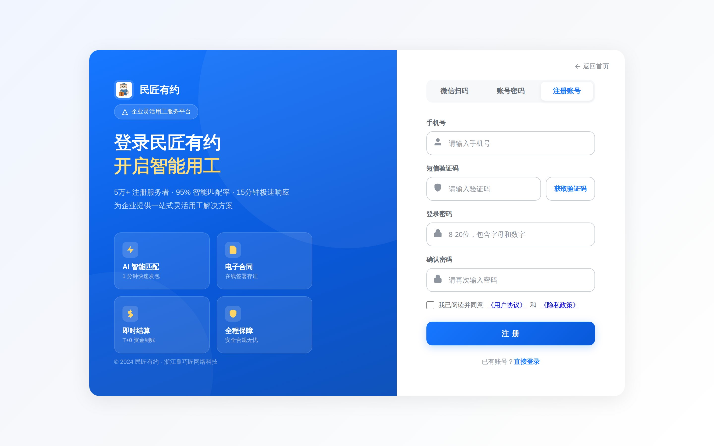
① 标题"注册账号"Tab(高亮) ② 手机号输入框 ③ 短信验证码+获取按钮 ④ 密码(6-20位)+确认密码 ⑤ 协议勾选(强制) ⑥ 注册按钮(disabled→enabled)| ① | 标题"主账号注册"：切换到 #registerPanel 时顶部 tab 高亮"注册"项，标题居中显示。 |
|---|---|
| ② | 手机号输入框：11 位手机号，正则 /^1[3-9]\d{9}$/，失焦校验。 |
| ③ | 短信验证码：6 位数字，60s 倒计时；同手机号 1h 内最多 5 次。 |
| ④ | 密码：6-20 位，至少含字母+数字；前端强度条实时反馈。 |
| ⑤ | 协议勾选（强制）：未勾选时注册按钮 disabled + 点击 toast "请先阅读并同意用户协议和隐私政策"。 |
| ⑥ | 注册按钮：四项全通过后由 disabled 变 enabled；点击触发图 5-1 流程。 |
5.2 登录分流流程（两种登录方式 × 已注册/未注册 4 条路径）
flowchart TD
L["打开 login.html"] --> TAB{"两种登录方式Tab选哪个?"}
TAB -- "微信扫码 #wxPanel" --> WX{"扫完码的用户
在本平台是否已注册?"}
TAB -- "密码+验证码 #accountPanel" --> PSW{"账号在系统存在?"}
WX -- "否" --> R1["切 #registerPanel
走 5.1 注册流程"] --> REG_OK["完成注册->切回扫码等待微信"]
WX -- "是" --> A1["协议勾选校验->1.2s提示扫码成功->1s轮询跳"] --> GO["account-center.html 产品中心"]
PSW -- "否" --> R2["提示账号不存在+高亮去注册
切 #registerPanel"] --> R1
PSW -- "是" --> P2{"密码+短信+协议
三项全通过?"}
P2 -- "否" --> R3["toast 错误原因
5次锁定 30min"] --> P2
P2 -- "是" --> A2["写登录态+注册态+角色会话"] --> GO
style REG_OK fill:#FFF4D9,color:#A87700
style GO fill:#0C9A74,color:#fff
style R3 fill:#FFE9E6,color:#A83019
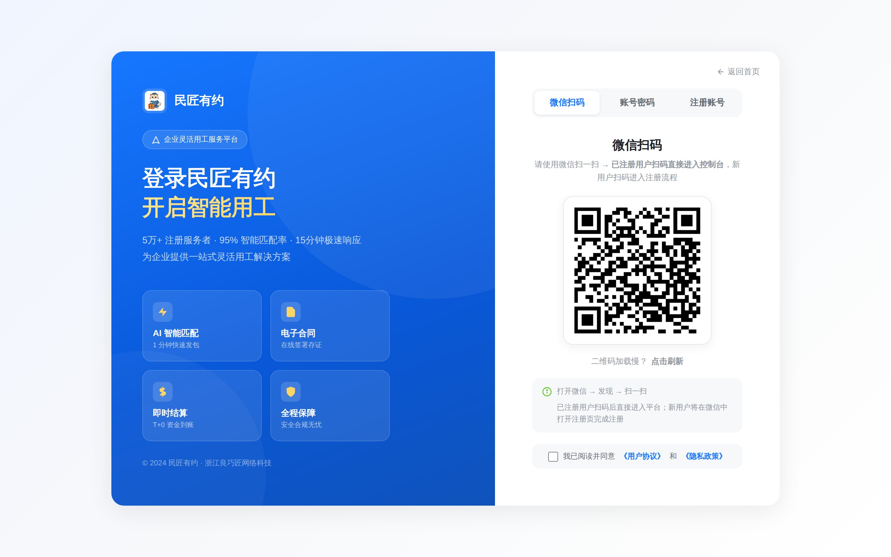
② 扫码说明文案 ① 二维码 ③ 协议勾选(强制)| ① | 二维码：绑定当前会话 ID，30s 自动刷新；落地页固定 #registerPanel，新用户扫码即进注册面板。 |
|---|---|
| ② | 扫码提示："已注册用户扫码后直接进入平台；新用户将在微信中打开注册页完成注册"，分两行说明。 |
| ③ | 协议勾选（强制）：未勾选时扫码命中也 toast 拦截，并切回扫码面板（详见 §1 与 6.1）。 |
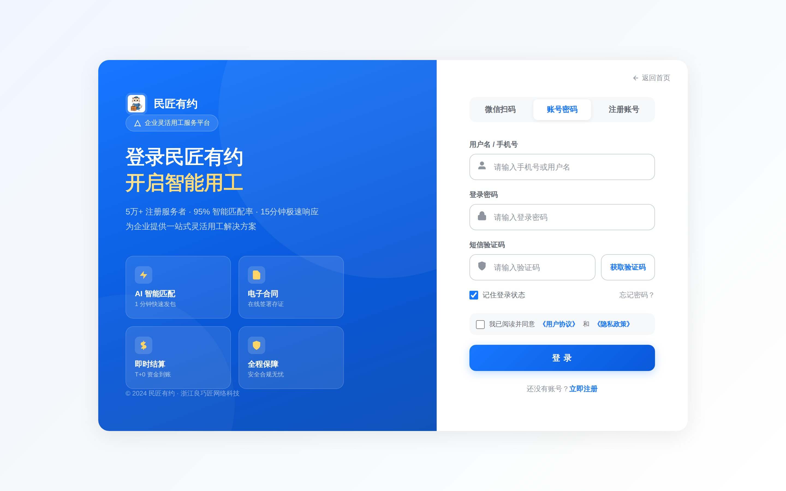
① 账号(手机号) ② 密码 ③ 短信验证码 ④ 协议勾选(强制) ⑤ 登录按钮| ① | 账号（手机号）：同注册手机号正则校验；输入框支持回车直接触发提交。 |
|---|---|
| ② | 密码：明文/密文切换图标，6-20 位。 |
| ③ | 短信验证码：6 位数字，60s 倒计时（同注册面板规则）。 |
| ④ | 协议勾选（强制）：未勾选时 toast 拦截，与微信扫码面板规则一致。 |
| ⑤ | 登录按钮：所有字段+协议全通过后 enabled，触发图 5-2 分流。 |
5.3 企业认证流程（爱签电子签约·三步完成：登录 → 填写企业信息 → 选择认证方式）
官网企业认证分三步：第一步主账号登录控制台；第二步填写企业信息（企业名称 + 统一社会信用代码 + 法定代表人信息）；第三步选择认证方式（爱签人脸认证或法人四要素核验二选一）完成认证。
flowchart TD S1["步骤1:主账号登录控制台"] --> S2["步骤2:填写企业信息
-企业名称
-统一社会信用代码(不脱敏)
-法定代表人姓名+身份证号"] S2 --> S3["步骤3:选择认证方式(二选一)
A.爱签人脸认证(法人活体+公安比对)
B.爱签法人四要素核验(姓名+身份证+手机号+银行卡)"] S3 --> VA{"爱签认证结果?"} VA -- "通过" --> PASS["企业状态更新为'已认证'
默认SaaS主账号全通"] VA -- "失败" --> RETRY["提示原因并允许重试
同一法人当日最多10次"] RETRY --> S3 style S1 fill:#F39B17,color:#fff style S2 fill:#F39B17,color:#fff style S3 fill:#F39B17,color:#fff style PASS fill:#0C9A74,color:#fff style RETRY fill:#FFE9E6,color:#A83019
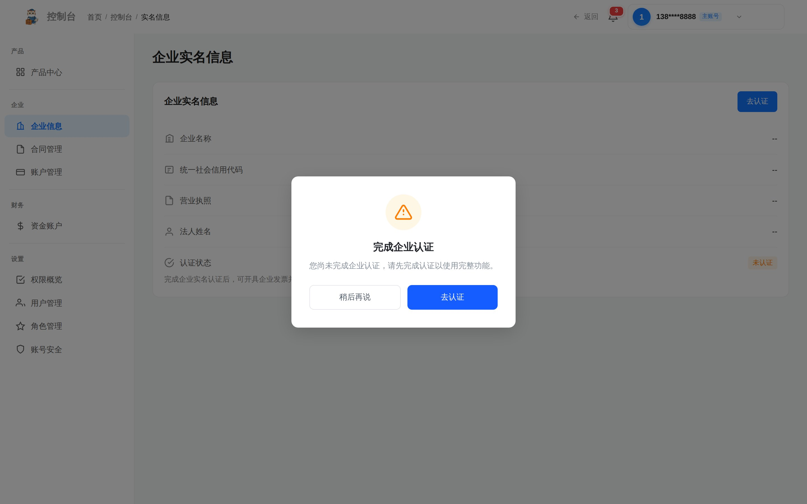
① 卡片头部(标题+去认证) ② 去认证按钮 ③ 企业名称 ④ 统一社会信用代码 ⑤ 法定代表人 ⑥ 底部提示| ① | 卡片头部："企业实名信息"标题 + 右侧"去认证"按钮；未认证态显示"未认证"标签。 |
|---|---|
| ② | 去认证按钮：点击跳 verify.html?type=enterprise，进入爱签二选一认证页。 |
| ③ | 企业名称：主账号在认证页填写，爱签调用工商接口实时比对一致；不一致则提示"请核对工商档案名称"。 |
| ④ | 统一社会信用代码：直接展示完整代码值（如 91310116MA1AB12K9X），主账号可直接查看，不做脱敏处理。 |
| ⑤ | 法定代表人：姓名 + 身份证号作为爱签人脸认证或四要素核验的输入项；填写后由爱签走活体比对 / 公安+银联核验。 |
| ⑥ | 底部提示：同一法人当日最多 10 次核验（防刷）；成功后企业状态置为"已认证"。 |
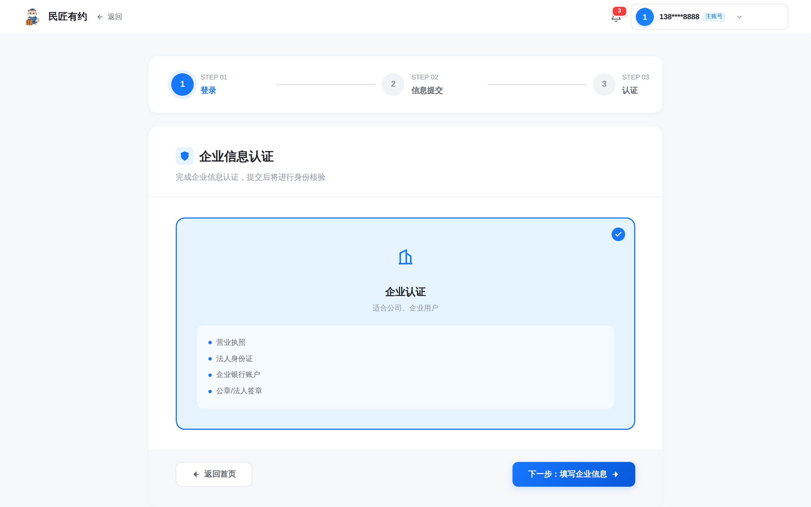
① 标题+说明"企业信息认证" ② "企业认证"卡片(选中态) ③ "下一步"按钮 ④ "返回首页"按钮| ① | 标题+说明：顶部"企业信息认证"标题 + 说明"完成企业信息认证，提交后将进行身份核验"。 |
|---|---|
| ② | "企业认证"卡片（选中态）：适合公司、企业用户；选中后点"下一步"进入步骤2填写企业信息表单（企业名称+统一社会信用代码+法定代表人信息）。 |
| ③ | "下一步"按钮：点击进入步骤2填写企业信息表单；填写完成后进入步骤3选择认证方式（爱签人脸或四要素核验二选一）。 |
| ④ | "返回首页"按钮：放弃认证返回控制台首页；认证成功后回到 account-realname 显示已认证态。 |
5.4 进入产品中心 & 开通 SaaS 流程（主/子账号差异化卡片按钮态）
flowchart TD
HOME["主/子账号登录->默认进产品中心"] --> AUTH{"企业是否已认证?"}
AUTH -- "否" --> GUIDE["居中弹引导:完成企业认证后才能开通三款SaaS
按钮:去认证(跳5.3) / 稍后再说"]
AUTH -- "是" --> CARD{"三款SaaS卡片按钮态"}
CARD -- "主账号 Owner" --> P["三张卡 进入平台 都可点击
点击->进入对应SaaS工作台"]
CARD -- "子账号" --> PERM{"检查三款SaaS开关
产品+模块是否被主账号勾选?"}
PERM -- "未勾选对应产品" --> X["卡片 进入平台 置灰 disabled
hover tooltip:请联系主账号授权"]
PERM -- "已勾选" --> Y["卡片 进入平台 可点击
进入后菜单按模块开关裁剪"]
style P fill:#E6F1FF,color:#2765D9
style Y fill:#0C9A74,color:#fff
style X fill:#FFE9E6,color:#A83019
style GUIDE fill:#FFF4D9,color:#A87700
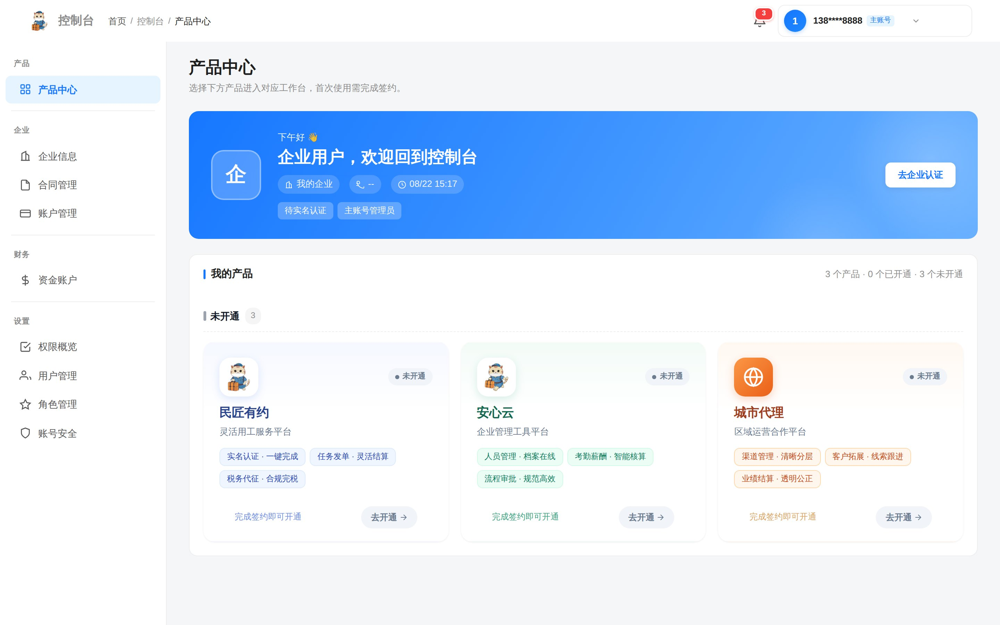
① 面包屑 ② 控制台品牌 ③ 左侧菜单树 ④ 页标题+副标题 ⑤ 三款SaaS卡片(未开通) ⑥ 产品中心激活态| ① | 面包屑：三级"首页 / 控制台 / 当前页"，统一跳转规范见 5.9。 |
|---|---|
| ② | 控制台品牌：左上角"控制台"文字，点击回产品中心首页。 |
| ③ | 左侧菜单树（共享基座）：产品组 + 用户组 + 系统组。SaaS 专属菜单在子账号点"进入平台"后按授权开关追加。 |
| ④ | 页标题："产品中心" + 副标题"选择下方产品进入对应工作台，首次使用需完成签约"。 |
| ⑤ | 三款 SaaS 卡片：未认证态三卡统一显示"未开通"。已认证后主账号恒亮；子账号按三款 SaaS 开关裁剪（见 4.2 节）。 |
| ⑥ | 激活态：左侧菜单"产品中心"项高亮，与页标题一致。 |
5.5 添加子账号 & 授权管控流程（角色 → 权限 → 用户 三步闭环）
flowchart TD OWN["主账号登录"] --> ROLE["角色管理 account-role
新建/编辑角色"] ROLE --> REDIT["角色编辑 account-role-edit
勾选三款SaaS模块开关"] REDIT --> PERM["权限管理 account-permission
权限项总览(可复核)"] PERM --> SAVE["保存角色->子账号U的授权范围"] SAVE --> USER["用户管理 account-user
添加子账号+挂角色"] USER --> SUB["子账号收到短信
用 sub-login.html 登录"] SUB --> SYNC["子账号下次登录或刷新页
产品中心卡片+菜单+模块URL按最新开关渲染"] SYNC --> EX["例:不勾选 安心云SaaS
李会计的产品中心安心云卡片变灰"] EX --> FEED["任何模块级越权访问:统一返回403
提示联系主账号+写入日志(见5.10)"] style OWN fill:#0C9A74,color:#fff style FEED fill:#FFE9E6,color:#A83019 style SUB fill:#475569,color:#fff
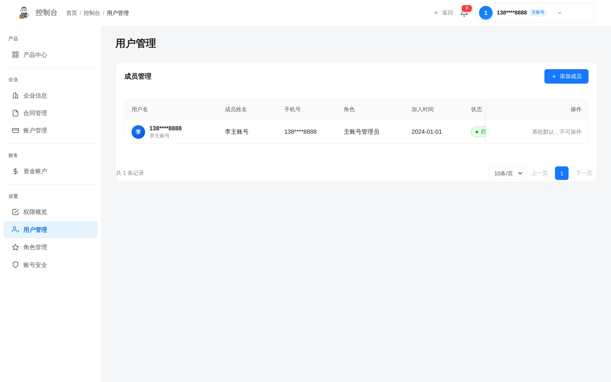
① 面包屑 ② 添加成员按钮 ③ 左侧菜单 ④ 页标题"用户管理" ⑤ 表头 ⑥ 数据行 ⑦ 分页| ① | 面包屑："首页 / 控制台 / 用户管理"，跳转规则同 5.9。 |
|---|---|
| ② | "添加成员"按钮：点击弹表单创建子账号（账号+姓名+手机号+角色+启停）。仅主账号可见，子账号即使有"用户管理-查看"权限也不显示此按钮。 |
| ③ | 左侧菜单："用户管理"项高亮；菜单结构同产品中心页。 |
| ④ | 页标题："用户管理"，与第三级面包屑文本一致、与左侧菜单高亮项一致。 |
| ⑤ | 表头：真实四列 成员账号 / 角色 / 加入时间 / 操作。"成员账号"列脱敏显示手机号（如 138****8888）。 |
| ⑥ | 数据行：列出全部成员；"操作"列含编辑、重置密码、移除（红色，二次确认）。 |
| ⑦ | 分页：底部居中，"共 X 条记录" + 页码导航。 |
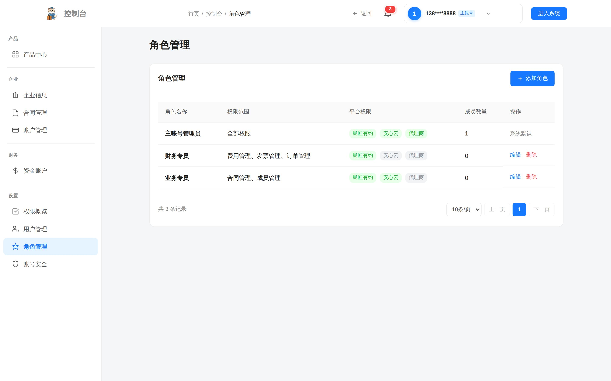
注释：角色管理页预置 管理员 / 财务 / 业务员 三个模板角色，主账号可直接复制为新角色再裁剪权限项。点击"新建角色"或行内"编辑"按钮跳 account-role-edit.html（图 5-5·截图 C），在角色编辑页通过权限树勾选 SaaS 平台 / 控制台模块 / 操作按钮三层粒度的开关；保存后回到角色列表，再切到 account-permission.html（图 5-5·截图 D）做权限项总览复核。
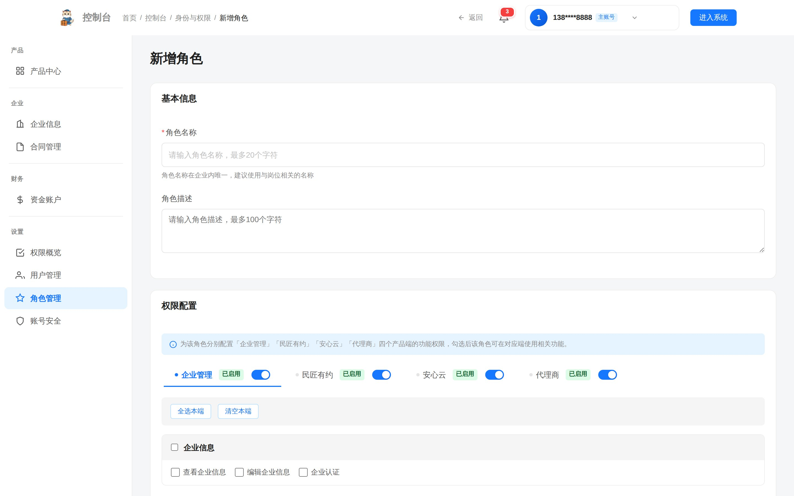
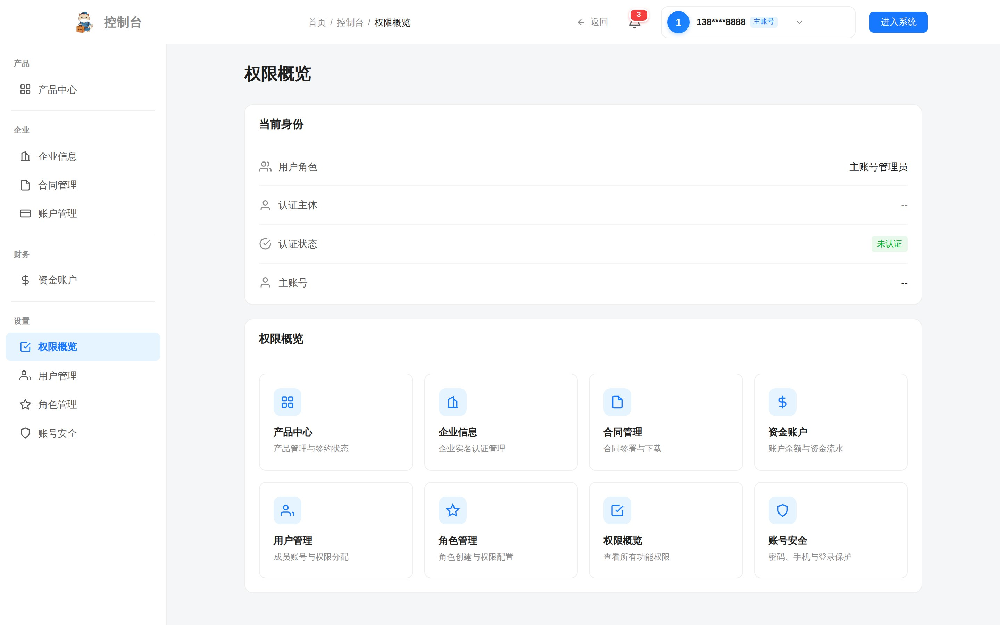
注释：权限管理页按模块分组列出全部权限项，每项含编码、名称、所属 SaaS、操作动作（view/create/edit/delete）。此页是只读复核视图，实际授权在角色编辑页进行；权限管理页用于审计与对账。
5.7 资金充值流程（企业钱包充值 · 仅支持对公打款）
资金账户充值仅支持对公打款方式。点击"充值"按钮时弹窗显示平台对公监管账户信息，企业通过网银/柜台向监管账户转账，到账后余额即时增加。绑卡为充值前置条件，未绑卡时点击充值会提示跳转绑卡页。资金账户可查看余额及明细流水。
flowchart LR
A["主账号登录 控制台->资金账户"] --> B{"已绑卡?"}
B -- "否" --> TIP["提示'请先绑定银行卡'->跳转绑卡页"]
B -- "是" --> C["点击'充值'->弹窗显示平台对公监管账户信息"]
C --> D["企业通过网银/柜台向监管账户转账"]
D --> P{"到账确认?"}
P -- "失败" --> L["提示错误原因"]
P -- "成功" --> W["资金账户余额 +N元
写入充值流水"]
W --> R["可在钱包页查看余额+流水明细"]
style W fill:#0C9A74,color:#fff
style L fill:#FFE9E6,color:#A83019
style TIP fill:#FFE9E6,color:#A83019
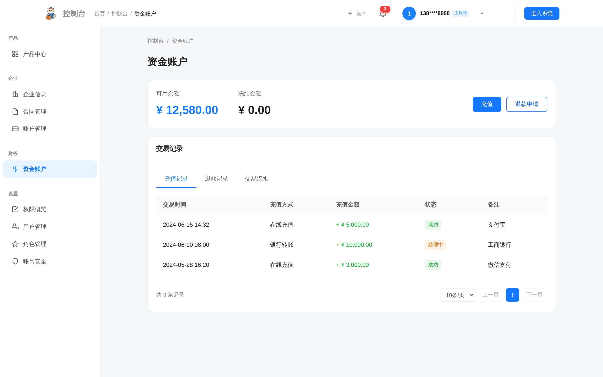
| ① | 可用余额 + 冻结余额：可用余额为企业充值后可支配余额；冻结余额为待结算金额。 |
|---|---|
| ② | 充值：点击后弹窗显示平台对公监管账户信息（账户名、账号、开户行）；前提是已绑卡成功，未绑卡则提示"请先绑定银行卡"并跳转绑卡页。 |
| ③ | 银行卡管理入口：点击进入 5.7·截图 B 的银行卡管理页，银行卡需先提交到中信银行绑卡成功后才能使用。 |
| ④ | 流水：充值流水分页列表，含交易号、对方、金额、时间、状态；可在钱包页查看余额及明细流水。 |
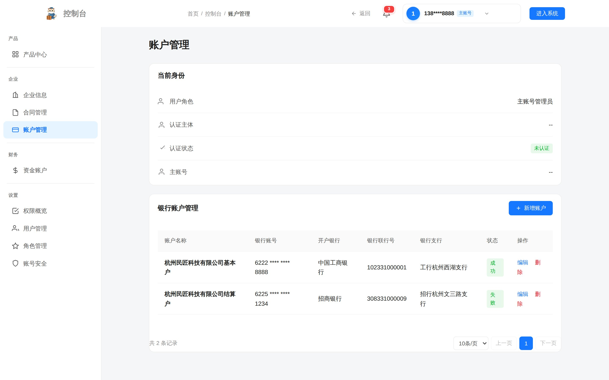
注释：银行卡管理页含已绑卡列表 + 添加银行卡（提交到中信银行绑卡，绑卡成功才显示成功状态）+ 设默认卡 + 解绑。资金账户仅作企业钱包充值用途，仅支持对公打款。
5.8 平台入口流程（官网 → 右上角进入系统 → 注册登录 → 企业认证 → 进入平台）
企业用户进入平台的标准路径：从官网首页右上角"进入系统"入口发起，依次完成注册登录、企业信息填写、企业认证，认证成功后即可进入平台控制台。本流程是 5.1 注册、5.2 登录、5.3 企业认证三节在官网入口侧的串联视图。
flowchart LR A["1.进入官网首页
index.html"] --> B["2.右上角点击'进入系统'"] B --> C["3.注册/登录
(微信扫码 或 密码+验证码)"] C --> D["4.填写企业信息
企业名称+统一社会信用代码+法人信息"] D --> E["5.企业认证(爱签)
人脸认证 或 四要素核验"] E --> F{"认证结果?"} F -- "成功" --> G["6.进入平台控制台
account-center.html"] F -- "失败" --> R["提示原因并重试
同一法人当日最多10次"] R --> C style A fill:#2A6DF4,color:#fff style G fill:#0C9A74,color:#fff style R fill:#FFE9E6,color:#A83019
 ① 右上角"进入系统"按钮
① 右上角"进入系统"按钮
注释：官网首页右上角"进入系统"为平台统一入口，未登录用户点击后进入登录页（含"注册账号"面板），完成注册/登录后引导填写企业信息并完成企业认证。

注释：登录页提供微信扫码、密码+验证码两条登录方式，并提供"注册账号"面板切换；登录后跳企业信息填写与认证流程（详见 5.1、5.2、5.3）。
注释：企业认证成功后落地到平台控制台首页（产品中心），可在此开通 SaaS 产品、添加子账号、资金充值、进入各产品工作台（详见 5.4、5.5、5.7）。
5.9 面包屑跳转规范流程（全控制台统一）
flowchart LR
U["任意控制台页 点击面包屑任一项"] --> W{"点击哪一级?"}
W -- "第1级 首页" --> H["index.html 官网首页"]
W -- "第2级 控制台" --> C["account-center.html 产品中心"]
W -- "第3级 当前页名" --> P["刷新或锚定回页顶"]
style H fill:#FF7A16,color:#fff
style C fill:#2A6DF4,color:#fff
style P fill:#0C9A74,color:#fff
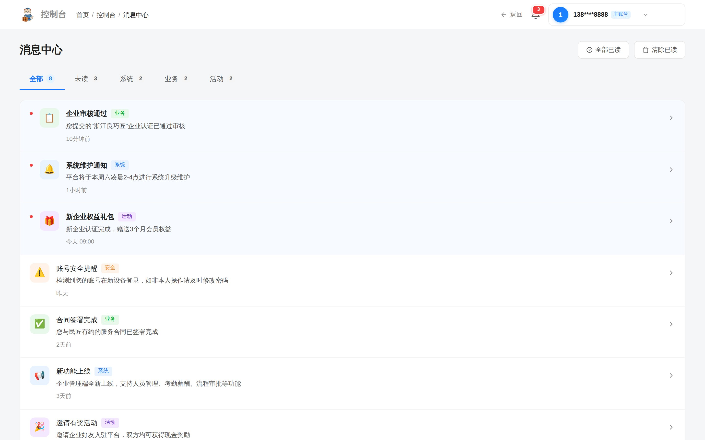
① 三级面包屑 ② 页标题"消息中心" ③ 消息分类Tab(全部/未读/系统/业务/活动) ④ 消息列表| ① | 三级面包屑："首页 / 控制台 / 当前页名"，前两级强绑定跳转，第三级为锚点刷新。 |
|---|---|
| ② | 页标题："消息中心"，与第三级面包屑文本一致；右侧有"全部已读""清除已读"操作按钮。 |
| ③ | 消息分类 Tab：全部 / 未读 / 系统 / 业务 / 活动 五类 tab，点击切换列表筛选。 |
| ④ | 消息列表：按当前 tab 筛选展示；点击行进 message-detail.html（图 5-9·截图 B）。 |
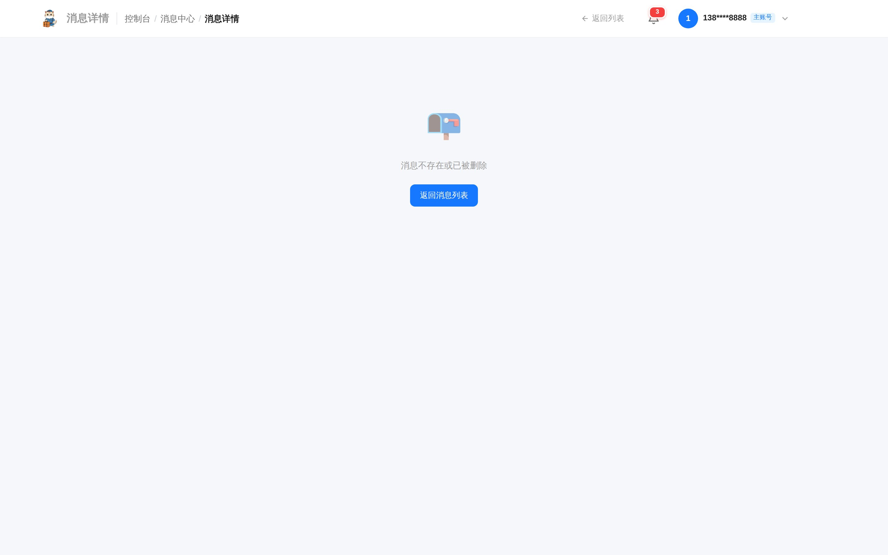
5.10 越权拦截流程（兜底安全网）
flowchart TD
SUB["子账号发起任意模块级操作"] --> CHK{"权限校验
(企业层+用户层+模块层)"}
CHK -- "通过" --> OK["执行业务"]
CHK -- "未授权" --> DENY["统一返回 403
toast:请联系主账号授权"]
DENY --> NTF["主账号消息中心收到越权告警
(可选:短信通知)"]
style OK fill:#0C9A74,color:#fff
style DENY fill:#FFE9E6,color:#A83019
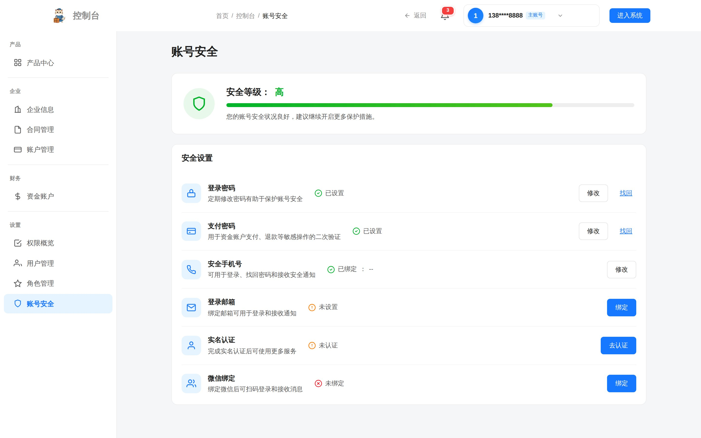
| ① | 修改密码：原密码 + 新密码 + 确认新密码；新密码强度同注册规则。 |
|---|---|
| ② | 绑定手机号 / 邮箱：主账号绑定手机号即注册手机号；邮箱可补充绑定用于接收告警。 |
| ③ | 二次验证开关：金额 ≥5w 的资金操作 / 角色权限修改 / 企业信息修改 必须主账号短信二次验证。 |
- 三款产品名定义：民匠有约 SaaS / 代理商 SaaS / 安心云 SaaS，作为平台统一对外文案。
- 角色体系采用扁平化设计：只有主账号（Owner，1 个/企业） + 子账号（N 个/企业，授权范围可勾选）两级，便于企业按需灵活授权。
- 登录方式提供两条：微信扫码 / 密码+验证码；"注册账号"作为登录页内的面板承载企业创建入口。
- 企业认证基于电子签约"爱签"：主账号二选一完成 人脸认证 或 法人四要素核验，认证成功即完成企业实名；同一法人当日最多 10 次认证。
- SaaS 平台开通前置条件：企业用户必须签署对应合同后才可在控制台使用对应 SaaS 产品（详见 3.1、5.4）。
- 控制台权限管理覆盖三类对象：民匠有约 SaaS / 代理商 SaaS / 安心云 SaaS 三个产品的模块权限，以及企业管理控制台自身的权限管理。
- 三者关系不展开具体表字段，只输出"逻辑关联关系图 + 三级授权判定链"。
- 本版结构按"每个业务流程独立成节配齐四件套"组织：5.0 全旅程总览 → 5.1 注册 → 5.2 登录分流 → 5.3 爱签认证 → 5.4 产品中心 → 5.5 子账号授权 → 5.7 资金充值 → 5.8 平台入口 → 5.9 面包屑 → 5.10 越权拦截，每节含流程图 + 截图 + 标注 + 注释。5.6 合同签约作为 SaaS 开通前置动作融入 5.4。